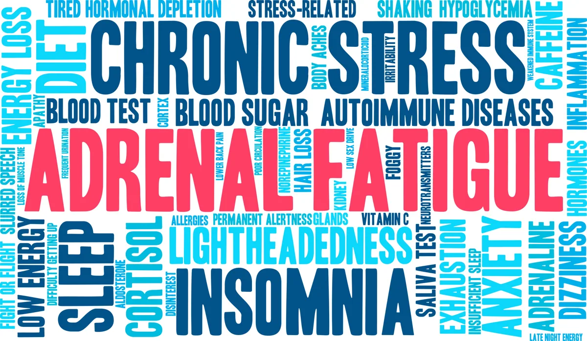

Health resources for every part of your health.
Health articles, organized by the topics you want to explore.
Conditions & Symptoms
Explore HRT.org information on conditions & symptoms.

HRT.ORG JOURNALAdrenal Fatigue—How Stress Affects Hormone Levels
Adrenal Fatigue and Insufficiency. How Does Stress Affect Your Hormone Levels. Diagnosis and Treatment Outlined.
Hormone Health
Explore HRT.org information on hormone health.
10 Important Reasons You Need Turmeric and Curcumin
Get natural help for 10 medical conditions with Turmeric and Curcumin, the 4000-year old spice that acts as an anti-inflammatory and antioxidant agent.
Lab & Genetic Testing
Explore HRT.org information on lab & genetic testing.
ApoE Testing For The Apolipoprotein E Genotype, Linked to Alzheimer’s and Cardiovascular Disease
Get ApoE testing to help predict risk for developing Alzheimer’s disease and cardiovascular disease. Find out which alleles, e2, e3, and e4 are inherited.
Nutrition & Lifestyle
Explore HRT.org information on nutrition & lifestyle.
10 Important Reasons You Need Turmeric and Curcumin
Get natural help for 10 medical conditions with Turmeric and Curcumin, the 4000-year old spice that acts as an anti-inflammatory and antioxidant agent.
Products & Information
Explore HRT.org information on products & information.
Fitbit | Heart Rate, Fitness, Activity Trackers
Movement everywhere—all the time, that seems to be the idea Fitbit capitalizes on when it comes to its approach to tracking exercise. More like the concept that many small movements combined, equate to big moves.
News & Answers
Explore HRT.org information on news & answers.
Lost Productivity Through Obesity-related Absenteeism, Costs Highest for 10 U.S. States Says Study
Obesity remains a critical issue for loss of productivity in the workplace, according to a study funded by the National Cancer Institute, costing companies dearly per employee every year, and the nation as a whole over 8 billion per year. The study indicates that absenteeism due to obesity-related illnesses not only reduces company productivity, but may also impact society in higher overall production costs and a less competitive work force.